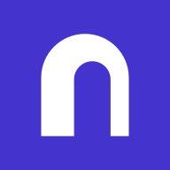
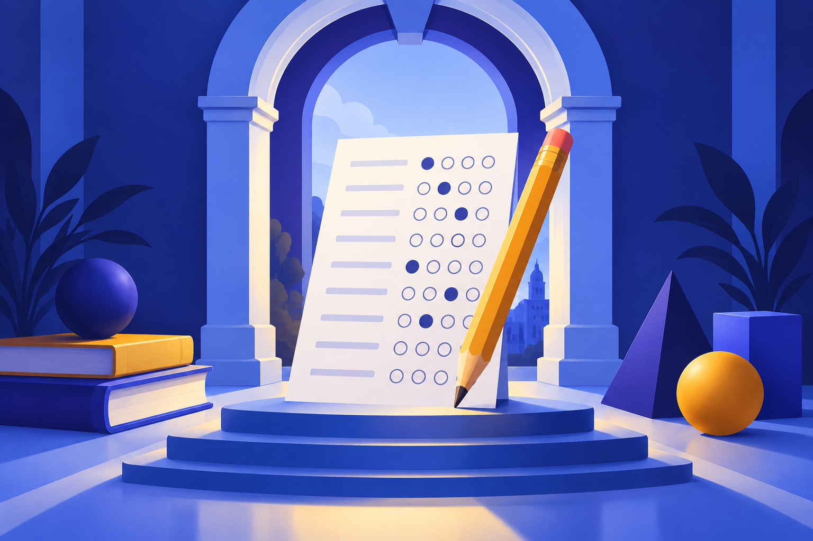
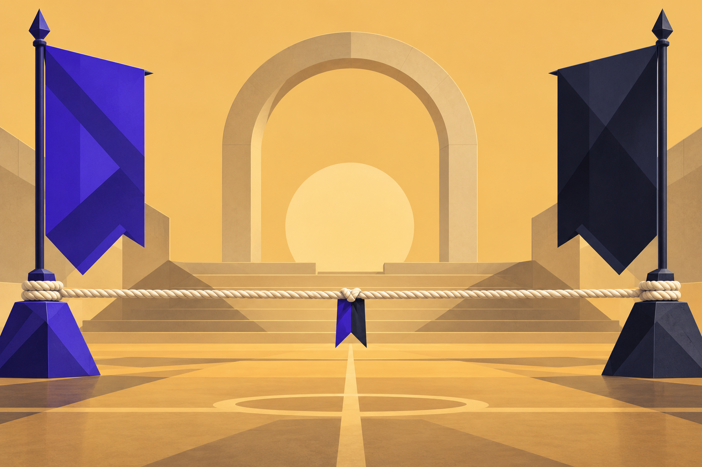
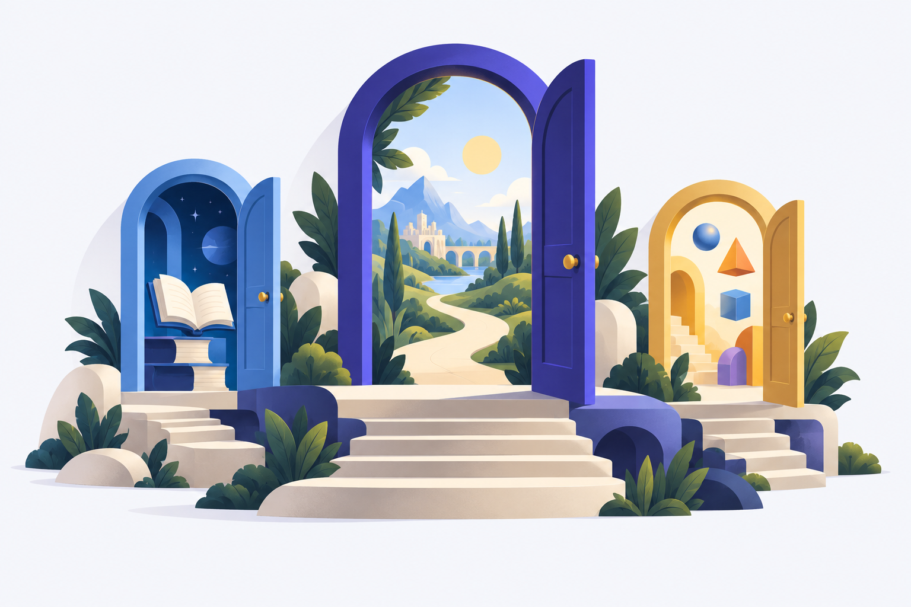

kidversity
One learning home. Open possibilities.
Final handoff for a Flutter platform serving pre-teens, teens and schools. Restrained artwork, readable typography and a clear next action. This is an asset inventory, not an application implementation. Wordmark above uses the local browser fallback; the Flutter brand widget specifies Plus Jakarta Sans.
Redesign specification · AI IDE instructions · Asset guide
Canonical identity

Core colours
Indigo #4433CCInk #20213BAmber #F5C56A
Separate artwork assets



Build all text, controls and progress with native Flutter widgets. The earlier cartoon-heavy screenshots are retained only in references/exploratory and are superseded by the written brief.